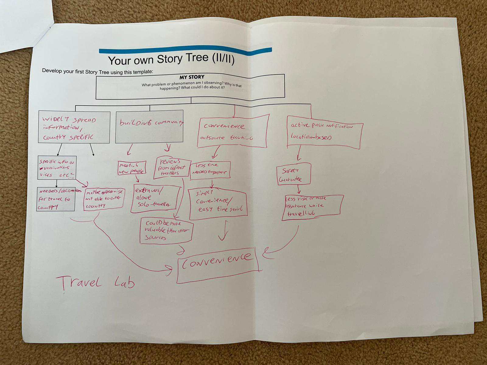
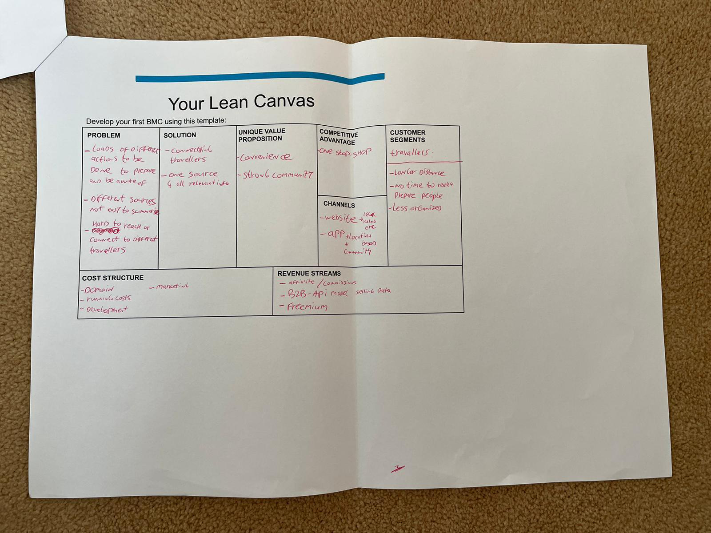

Week 1: The Travel Lab Journey Begins
How the idea of TravelLab came to exist, from forming our founding team to mapping out our first business idea.
The Beginning
The Birth of TravelLab
During our first week of the Entrepreneurial Lab course the idea of TravelLab came to exist. It started off by forming our founding team of five and later on six. Since neither of us had an idea that they really wanted to start working on, we decided to go around and let each of us pitch one of their ideas. Eventually we chose the idea of TravelLab.
Problem Discovery
Identifying the Problem
We all acknowledged the problems current travellers experience preparing for and during their travels. To see if this was the case for others as well we started following the lecture guidelines and developed a theory. We asked ourselves the question "Why do travellers experience these problems" and in response "What can we do about it?".
To further understand the problems a storytree was made as seen below. With this story tree we acknowledged that there is way too much wide spread information, no active travel community, and no informative help during your travels. We gave it our thoughts about what could be done about these issues and came to one conclusion: offering convenience.

Business Model
The Lean Canvas
Since this will be a start-up with no business model, we took a look at the lean model canvas as seen below. By doing so we identified our initial customer segment being travellers, with distinction in longer distance travellers, travellers that do not have time to prepare, and travellers that are less organized. We used our ideation process from the story tree to identify the problems such as scattered information sources and many steps to be done for preparation. At the same time we looked at possible solutions in the form of connecting travellers and one source for all reliable information. That led us to our unique value proposition of offering convenience and a strong travel community. We want to achieve this by offering a one-stop-shop for travellers through a website pre-travel and an app for during travels.
